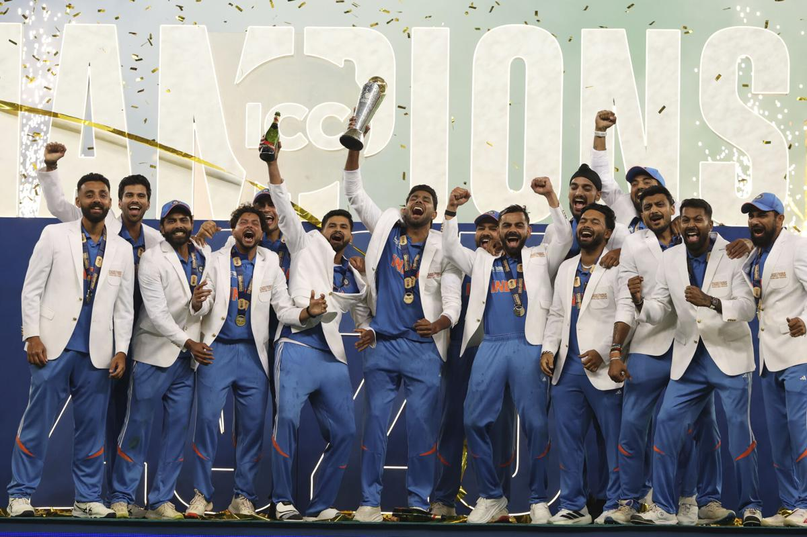

Cricket
INDIA (Blue Army)
The India men's national cricket team, also known as Men in Blue,
represents
India in international cricket. It is governed by the Board of Control for
Cricket in India and is a full member nation of the International Cricket
Council with Test, ODI and T20I status. India are the current T20 World
Champions and Champions Trophy holders.


The team has played 589 Test matches, winning 181, losing 184, with 223 draws
and 1 tie. As of November 2024, India is ranked second in the Test
Championship on 111 rating points. India have played in two of the
three World Test Championship finals, finishing runners-up in 2021
and 2023, while finishing third in 2025.
Test rivalries include the Border–Gavaskar Trophy with Australia,
Freedom Trophy with South Africa, Anthony de Mello Trophy and Pataudi
Trophy both with England.
The team has played 1,066 ODI matches, winning 567, losing 445, tying
10 and with 44 ending in a no-result. As of March 2025, India is ranked
first in the ICC ODI Championship on 122 rating points. India have
appeared in the World Cup final four times (1983, 2003, 2011, 2023)
and won twice in 1983 and 2011. It was the second team, after the
West Indies, to win the World Cup, and the first to win the competition
on home soil after winning it in 2011. India have also won Champions
trophies in 2002, 2013 and 2025. In addition, they have also won the
ODI Asia Cup 7 times in 1984, 1988, 1990–91, 1995, 2010, 2018, and 2023.
The team has played 247 Twenty20 International matches, winning 164,
losing 71, tying 6 and with 6 ending in a no-result. As of November
2024, India is ranked first in the ICC T20I Championship on 268 rating
points. India have won the ICC Men's T20 World Cup twice in 2007 and 2024.
They have also won the Twenty20 Asia Cup in 2016 and gold medal at the Asian
Games in 2022.
India are the reigning One Day Asian and T20 World Champions, winning the
former in 2023 against Sri Lanka at the R. Premadasa Stadium in Colombo
and the latter in 2024 against South Africa at the Kensington Oval in
Bridgetown.[12] They are also current Champions Trophy holders, winning
it in 2025 against New Zealand.